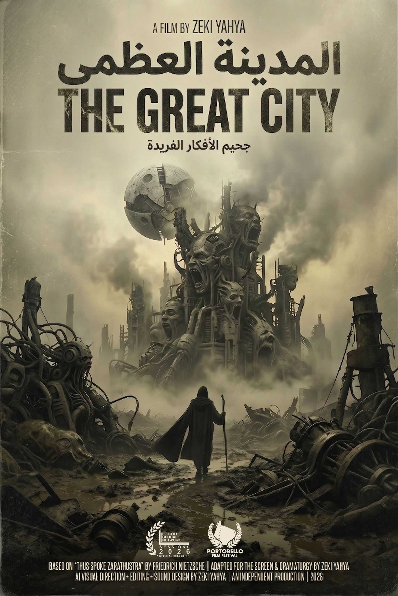
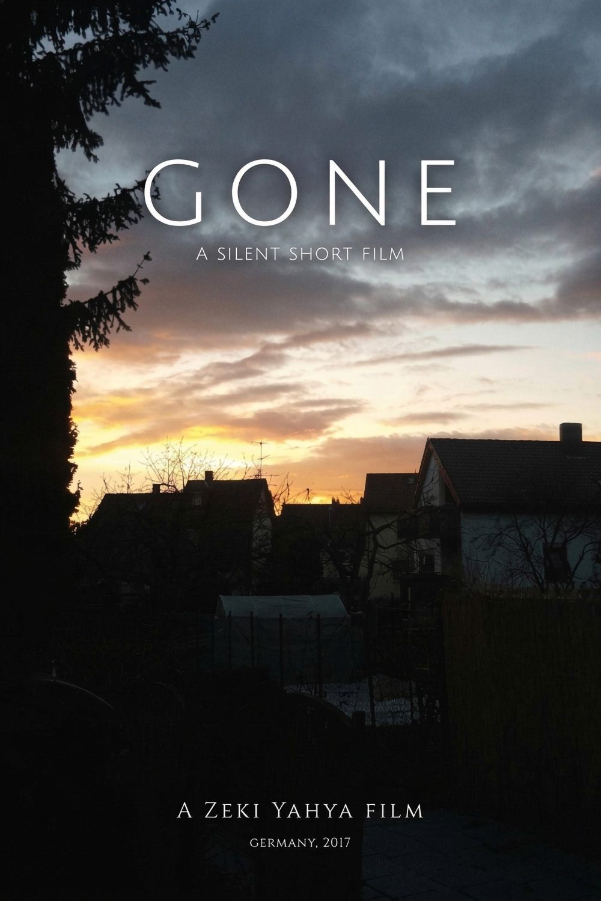
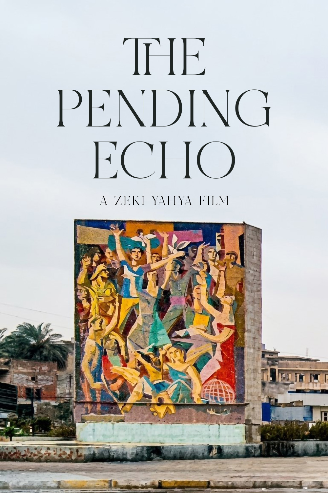

Zeki Yahya
Fîlmçêker û lêkolînerê serbixwe
Bi balkêşiya li ser sînemaya felsefî, dîstopîk, ceribandinî û avangard
Bi balkêşiya li ser sînemaya felsefî, dîstopîk, ceribandinî û avangard
Ji bo min sînema ne tenê amûrek e ji bo vegotina çîrokan; ew kiryarek kolana giyanî û felsefî ye. Ew lêgerîna dîtbarkirina tiştê ye ku hê xwe nîşan nedaye, girtina têkoşînên bêdeng ên hebûnê berî ku ew form bistînin.
Lêkolîna min a sînemayî bi kûrahî di lêgerîna ontolojiya rastiyê de kok daye. Ji giraniya hebûnî ya kûr a felsefeya Nîçeyî û ji aramiya tefekurî û xemgîn a kevneşopiya Tarkovskî îlhamê digirim; ez li perdeyê ne wekî tabloyekê, lê wekî neynikekê dinêrim ku wêraniyên ruhê nûjen nîşan dide.
Di rêwîtiya xwe ya berdewam de — ji parçekirina mekanîzmayên rastiyê di “The Illusion Industry” de heya vekolîna xerîbiya piştî-pîşesaziyê di “The Great City” de — min her tim xwest sînorên vegotina dîtbarî berfireh bikim. Îro em li ber deriyê sînorekî nû ne: wêneyê sentetîk.
Bi karê xwe yê herî dawî, “Archaeology of Unborn Faces”, ez dikevim “cihê veşartî” yê aqilê destkirî. Ez algorîtmayan ne tenê wekî amûr, lê wekî “pakijiyekî dîjîtal” dibînim ku tê de bîranînên ku qet nebûne û nasnameyên ku hê nehatine dinê bi êş têdikoşin ku xwe nîşan bidin. Bi lensek tarî û yekreng û bi hêza xav a sînemaya bêdeng, ez dixwazim van rûyên nezayî derxim ronahiyê û dipirsim ku di serdemekê de ku makîne dikarin xemgîniya mirovî di xewnê de bibînin, mirov bûn tê çi wateyê.
Ez fîlman çêdikim da ku hilweşîna bêdeng û vejînên lal ên giyanê mirovî tomar bikim. Karê min vexwendinek e ku em ne bi tirs, lê bi daxwazeke kûr a fêmkirina mîmariya xeyalên xwe, li newalê binêrin.


Doza sînemayî li dijî demê. Ev proje ji vegotina kevneşopî derbas dibe û paşxistina bîrokratîk a hebûnê berhem dike — wergerek dîtbarî ya kabûsa Kafkayî û tirsa Nîçeyî ya ruhê pîşesaziyê yê nûjen. Bi rakirina diyalogê û rehetiya muzîkî, temaşevan neçar dimîne ku erozyona li bendê mayînê bi laşê xwe bikişîne û perde dibe pakijiyek hebûnî.
Case 0: TomorrowJi bo mezinkirinê li dîmenekê bitikîne


Kolaneke sînemayî ya kûr a “cihê veşartî” yê aqilê destkirî. Ji rexneya xapandina dîjîtal wêdetir, ev proje ontolojiya hebûna sentetîk bi xwe lêkolîn dike. Bi pejirandina felsefeya Tarkovskî ya li ser peykertaşiya demê, plansên bi êş hêdî û bêdengiya giran temaşevan neçar dikin ku giraniya fîzîkî ya demê di nav makîneyekê de bikişînin ku mirinê fêm nake. Rûyên bêqusûr ên ku xuya dibin ne neynika rastiyê ne, lê “hîperrealîteyek” Baudrillardî ne ku tunebûna serçavê veşêre.
Archaeology of Unborn FacesJi bo mezinkirinê li dîmenekê bitikîne


Bi îlhama şahekara felsefî ya Friedrich Nietzsche, “Zerdeşt Wiha Got”, ev projeya avangard wekî neynikeke sînemayî ya tarî ya metropola hevçerx dixebite. Ew pêşbîniya tirsnak a “Mirovê Dawî” bi dîtbarî parçe dike — xuyabûna herî bilind a nîhîlîzma giyanî û hilweşîna çandî di nav elaleta nûjen de. Bi lensek ceribandinî ya bêîmtiyaz, fîlm romantîzma pêşketina bajarî radike da ku bingeha valakirî ya civakekê ku di dubarekirina mekanîkî de asê maye eşkere bike.
The Great CityJi bo mezinkirinê li dîmenekê bitikîne

Rexneyeke sînemayî ya tund a hîperrealîteyê û xapandina dîjîtal. Ev proje sînorên tarî yên di navbera hebûna rastîn a mirovî û rastiyên simulekirî de dikole û vegotinên çêkirî yên ku li ser çanda me ya dîtbarî serdest in dixe ber pirsê. Bêpar ji peymanên rûkal ên sînemayê, fîlm temaşevan vedixwîne ku ontolojiya wêneyê û hilberîna sîstematîk a xeyalê di cîhana nûjen de parçe bike.
The Illusion IndustryJi bo mezinkirinê li dîmenekê bitikîne


Rêwîtiyeke dîtbarî ya tefekurî ber bi kûrahiyên tenêtiyê û rojaneyê ve, ku tê de “tablo” ji tiştekî sade vediguhere neynikekê ku têkoşîna mirov di navbera daxwaza girêdayînê û tahma xerîbiyê de nîşan dide. “Painting” ezmûnek sînemayî ye ku valahiya di navbera xwe û yê din de dikole.
PaintingJi bo mezinkirinê li dîmenekê bitikîne


Rêwîtiyeke dîtbarî ya berfireh, tijî ruhê berxwedanê û daxwaza jiyanê li paytexta Iraqê, Bexdayê. Ji klîşeyên naskirî dûr, fîlm dikeve kûrahiya mirovî û çandî ya bajêr û hûrgiliyên zindî yên kolanên Bexdayê, herikîna jiyana rojane, zelaliya Dîcleyê û pirên wê yên ronîkirî nîşan dide, bi lêdana dilê malbat û ciwanên ku di nav zehmetiyan de şadiyê diafirînin re li hev. Ew belgekirineke sînemayî û hunerî ya evîna berdewam a jiyanê ye.
Insistence on LifeJi bo mezinkirinê li dîmenekê bitikîne


Fîlmek li ser tunebûn û windakirinê, ku giraniya nedîtî û hebûna domdar a tiştê ku maye dikole. Kar li ser geometriya valahiyê û xerîbiya cihî difikire, bêyî vegotin an diyaloga kevneşopî, û şopên dîtbarî yên pak wekî şahidiya derbasbûna demê dihêle.
GoneJi bo mezinkirinê li dîmenekê bitikîne

Belgefîlmeke çavdêr û zeviyî ye ku li Bexda û Necefê di dema tevgera medenî ya 14ê Sibata 2014an de hatiye kişandin. Bi binavbûna dîtbarî ya rasterast û diyalogên zindî yên bixwebexş, fîlm dengên nefîlterkirî, minaqeşe û têkiliyên mirovî yên hemwelatiyan li cihê giştî tomar dike û tomareke zindî û bênavbeynkar a vegotina ji binî pêşkêş dike.
The Pending EchoJi bo mezinkirinê li dîmenekê bitikîne
Manîfestoyek sînemayî û felsefî ku “Realîzma Xemgîn” wekî metodolojiyeke dîtbarî ya hilweşîner di serdema sînemaya sentetîk û dîjîtal de dikole. Bi kişandina paralelên kûr ên fenomenolojîk bi şahekara Andrei Tarkovskî ya sala 1983an, Nostalghia, ev kar bikaranîna kêşana fîzîkî, rizîna jîngehî û domdariya bi êş li hember kamilbûna hîperrealîst a hevçerx lêkolîn dike...
Li PhilPapers bixwîne ↗Ev gotar krîza epîstemolojîk a serdema dîjîtal lêkolîn dike û angaşt dike ku dezgeha medyayê ya nûjen civakê ne bi bêdengkirina rastiyê, lê bi hilberîna girseyî ya xeyalên algorîtmîk ên pir-kesanekirî kontrol dike. Bi karanîna fîlma Shutter Island (2010) a Martin Scorsese wekî metafora navendî, gotar rastiya serdagirtî û çêkirî ya Nexweşxaneya Ashecliffe dide paralel kirin...
Li PhilPapers bixwîne ↗Ev lêkolîn diyardeya nûçeyên sexte wekî xuyabûneke xeternak a dezînformasyonê di jîngeha dîjîtal a hevçerx de digire dest, ku wekî pîşesaziyeke bi hişyarî ya xeyalê dixebite û li ser tevgera tevlihev a di navbera algorîtmayên dîjîtal û pêşdaraziyên derûnî yên mirovî de ava bûye. Bi girêdana bi nêzîkatiyeke vegotinî-analîtîk û analîza semiyotîk...
Li Zenodo bixwîne ↗Ji bo bernamekerên festîvalan, kuratoran, lêkolîneran û çapemeniyê.